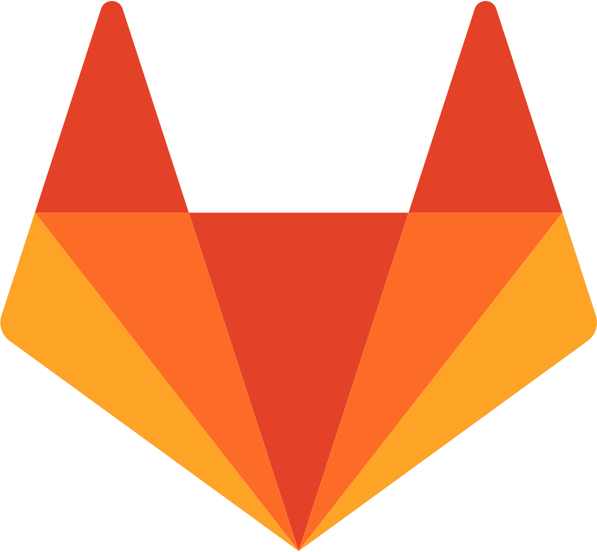

üëã Hej! I am:
-
üßë‚Äçüéì a PhD in computational biology
I was working
in CRAN/LORIA in the capsid team,
supervised by
Taha Boukhobza
& Malika Smail-Tabbone;
-
üíº now looking for a post-doc in systems biology (formal modeling with Boolean networks and reaction networks);
-
üåç a nanc√©ienne (üá´üá∑), ex-lilloise (üá´üá∑), ex-parisienne (üá´üá∑),
happy to move abroad;
-
üêç a Python lover (the programming language), also fond of Answer-Set Programming (ASP), but not much of R;
-
üêÄ a rat care-taker (the cute animal);
-
üé∏üé∫ a musician (guitar and trumpet);
You may want:
- üìß my e-mail address: athenais DOT vaginay AT loria DOT fr;
- üì∞ my academic papers
on HAL
/ Google scholar
/ dblp
(/!\ dblp covers publications from computer science only)
;
-
 my LinkedIn (updated in August 2023);
my LinkedIn (updated in August 2023);
-
 my GitHub
my GitHub
(the code for my PhD research is stored on the private
GitLab 
of my lab.
It is accessible on request);
- üì≠ my work address (I love letters!):
Bureau B142
Campus Scientifique, 615 Rue du Jardin-Botanique
54506 Vandœuvre-lès-Nancy
Feel free to get in touch with me (in french or english). :)
üí¨ Talks / Seminars / Interventions
All the slides are available on request.
Synthesis of Boolean Networks from the Structure and Dynamics of Reaction Networks
Synthesis of Boolean Networks from the Structure and Dynamics of Reaction Networks
Sélection et analyse de modèles pour les réseaux biologiques
13th December 2022
At FCH seminar (invited presentation).
ASKeD-BN: Automatic Synthesis of Boolean Networks from Knowledge and Data
From Chemical Reaction Networks to Boolean Networks, Automatically
Automatic synthesis of boolean networks from biological knowledge and data
Modelling Biological Systems with Boolean Networks
ASKeD-BN: Automatic Synthesis of Boolean Networks from Knowledge and Data
ASKeD-BN: Automatic Synthesis of Boolean Networks from Knowledge and Data
Flash presentation (poster)
Quick Presentation
04 Apr. 2019
Loria Departement D5'day
caspid "tea-time" seminars
monthly scheduled seminars of my team.
ASKeD-BN: Automatic Synthesis of Boolean Networks from Knowledge and Data
Jun. 2021
caspid "tea-time" seminar
Constrained Enumeration of Boolean Networks from Biological
Data and Knowledge (prepare OLA submission)
19 Jan. 2021
caspid "tea-time" seminar
Slides
The Search Space of the Logical Function Synthesis Problem
— Application for Biological Systems
26 May 2020
caspid "tea-time" seminar
Slides
Automatic Transformation from Reaction Models to Boolean
Models Using Answer-Sets Constrained by a Topology and an
Abstracted Dynamic
23 Jan. 2020
caspid "tea-time" seminar
Slides
Récap Ecole Bioregul' (Porquerolle), JeBIF + JOBIM (Nantes)
30 Jul. 2019
caspid "tea-time" seminar
Slides
Introduction to Critical Thinking (in french)
12 Feb. 2019
caspid "tea-time" seminar
Slides
Presentation of my Thesis Project
28 Nov. 2018
caspid "tea-time" seminar
üìÑ Publications
I put my papers on
HAL.
üë©‚Äçüè´ Teaching
- Université de Lorraine, Nancy, France
- Université Paris Diderot (P7), Paris, France